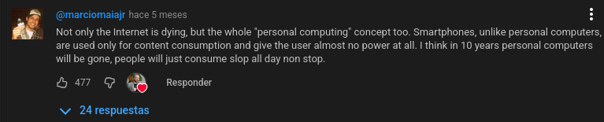

A finales del año pasado tuve la idea de ser mas "autonomo" o "soberano" en Internet, y aparte de tener un correo electronico en condiciones o mitigar mi presencia en redes sociales, el punto principal de todo era tener mi propia pagina web. Bueno, ¡finalmente ha llegado el dia! Es patetico lo mucho que lo he aplazado, pero es que no me decidia si comprar un dominio y alquilar un server, o hostearlo yo mismo, o usar un servicio como github (¿adivinais cual elegí al final?)
Para colmo es que no se programar, entonces cuando me quise poner a ello se me hizo cuesta arriba y como no me salia el primer dia lo mande a tomar viento. Pero ayer me dio la inspiración final (en verdad estaba procrastinando) y por fin me decidí a hacerla.
Puede que no sea la web mas impactante del mundo, es un simple html, pero mas allá de que esta pagina está en linea gracias a la simpleza de este lenguaje, una pagina web refleja al autor. Por muy minimalista y utilitaria que te parezca, claramente funciona. No hay intermedios ni callejones a ninguna parte, es objetivamente perfecta ;) Ademas, algo muy importante, ¡la he hecho yo! Increíble, ¿no? Hace 2 días no sabia ni como el css afectaba al diseño del html.
No se cuanto tiempo durará, quizas el cataclismo que anuncian los escatologistas de la IA realmente suceda y arrase todo el Internet conocido y volvamos a tiempos de la Arpanet o de hacer nuestras propias Intranet.
Pase lo que pase,
1.Es emocionante
2.Vamos a ganar
3.La muerte no es el final
